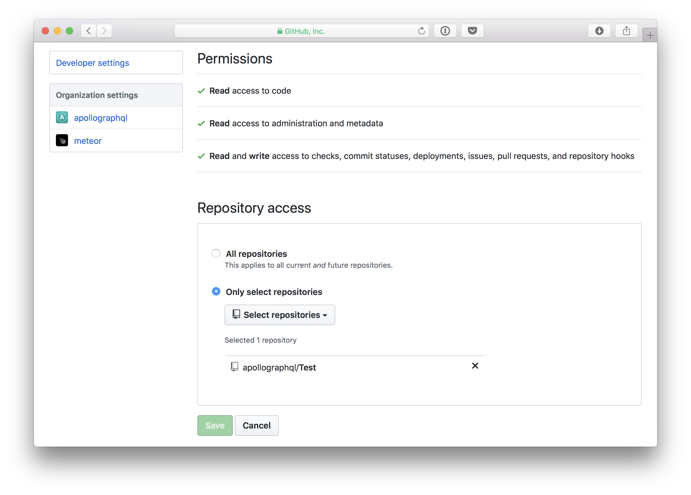

Deploying with Zeit Now
Now is a service by Zeit that allows the deployment of an instance of Apollo Server, quickly providing a functional GraphQL endpoint.
Prerequisites
- A Now account
- The Now CLI (unless using automatic GitHub deployments)
Setting up the project
Deployment to Now for Node.js apps requires a package.json file to be present in the app’s root directory.
{
"name": "graphqlservice",
"version": "1.0.0",
"scripts": {
"start": "nodemon index.js"
},
"dependencies": {
"apollo-server": "^2.0.0-rc.5",
"graphql": "^0.13.2",
"nodemon": "^1.17.5"
}
}
Now looks for a start script to start the app. As long as that is in the package.json, the app should be able to start up.
Deploying with Now
Now offers multiple options for deploying projects.
Local Projects
If the Now CLI is installed, then running the now command from the root directory of the project should deploy the project.
$ now
The now command immediately deploys a server to the cloud and returns the hosted project link. After finishing, it should be possible to send a query to the GraphQL schema on now at <NOW_APP_NAME>.now.sh/graphql.
Manual GitHub deployment
If a GraphQL server project is publically available on GitHub, Now provides the ability to deploy straight from GitHub by calling the now command with the user/organization name and repository name in the format user/repository-name.
For example, to deploy Apollo’s graphql-server-example, the command would be:
$ now apollographql/graphql-server-example
The now command deploys right away and attempts to start the server. This specific example would fail though, due to missing environment variables. They can be added by following the section on environment variables.
Automatic GitHub deployment
Now supports automatic deployment from GitHub on pull requests.
To set up automatic deployment, visit https://zeit.co/github and click on the “Setup Now” button.
After signing in with GitHub, the Now GitHub app can be added to any account or organization. Once installed, it’s possible to choose which repositories that Now can run on, allowing new deployments on Pull Requests.

Setting environment variables
The graphql-server-example project requires environment variables to enable reporting to Apollo Engine. To deploy to Now with environment variables, the -e flag can be used followed by the variables like so:
$ now -e ENGINE_API_KEY=xxxxxxxxx apollographql/graphql-server-example